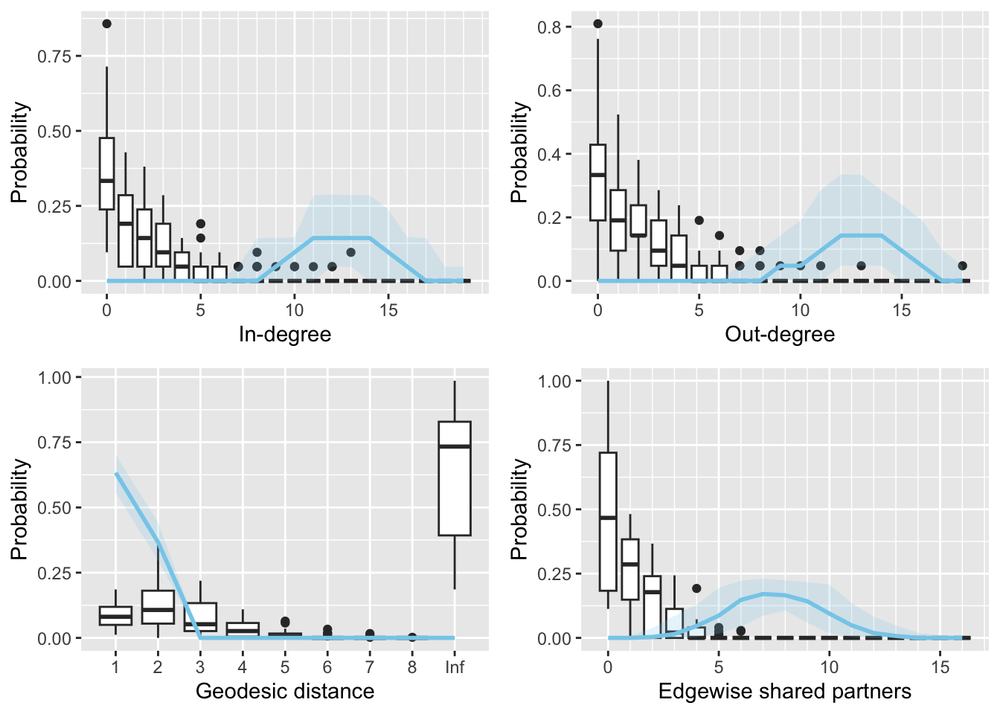

#devtools::install_github("brieuclehmann/multibergm")
#packageurl <- "https://cran.r-project.org/src/contrib/Archive/ergm/ergm_3.11.0.tar.gz"
#install.packages(packageurl, repos = NULL, type = "source")
library(multibergm)Hierarchical ERGM Analysis
1 Overview of Multi-Network Analyses
Tolochko & Boomgaarden (2024) define multilevel approach to network analysis as characterized by the following “dependency assumptions”:
A set of \(N\) nodes (e.g., people) broken down into \(K\) separate blocks (e.g., classes) such that edges \(E\) within a block are \(A_k\) are structurally dependent on each other. The nodes \(N\) are independent across the \(K\) blocks (i.e., no structural possibility for nodes from different blocks to have a tie). Finally, the edges \(E\) have an “informational dependency” across blocks \(K\) in the sense that they are formed according to a similar dependency structure (e.g., reciprocity, transitivity, etc.). In other words, different blocks have a similar data generating processes behind the tie formation. Therefore, knowing somehting about the structure properties of block \(A_i\) may inform the generation of ties in block \(A_j\) (pg. 2).
For our data, we assume this multilevel approach. Specifically, in each classroom, we want to model the conditional probability of an avoidance tie from student \(i\) to classmate \(j\). The avoidance edges within each classroom are structurally dependent on each other and the students are independent across classrooms. However, we assume that the share a dependent structure, or in other words, have a similar data generating process (though the exact coefficient values, we do not assume are shared).
2 Same but different: A comparison of estimation approaches for exponential random graph models for multiple networks
Tolochko & Boomgaarden (2024) outline two methods for estimating multiple networks:
A meta-analytic or hierarchical approach. The entire population is estimated as a single “super-network”, with structural zeros imposed such that actors from different subpopulations cannot interact with each other (an example of this is a a block diagonal approach).
An integrated approach. A two-step regression approach in which individual enetwork statistics are estimated in the first step and then coefficients are pooled relative to the “grand mean” in the second step. The meta-analysis can estimate the variance in he structural characteristics between different networks via a mixed effects model in the second step. For example, Lubbers (2003) and Lubbers & Snijders (2007) proposed:
\[ \hat{\theta}_m = \mu_\theta + U_m + E_m \] Here, \(\hat{\theta}_m\) is the estimated parameter for network \(m\), \(\mu_\theta\) is the average coefficient, \(U_m\) is the deviation in network \(m\) from this grand mean with \(U_m \sim \mathcal{N}(0, \sigma^2_\theta)\), and \(E_m\) is the estimation error.
For both the hierarchical and integrated approaches, no pooling, partial pooling, or complete pooling approaches can be used.
- Complete pooling entails that all networks are assumed to be generated by the same data generating process.
- No pooling entails that all networks are assumed to be generated by independent data generating processes.
- Partial pooling entails combining all available information from individual networks and the clusters these networks are in.
According to Tolochko & Boomgaarden (2024), partial pooling is almost always the preferred method when dealing with clustered data.
Both the hierarchical and integrated method for multiple network analyses can implement a partial pooling approach (Tolochko & Boomgaarden, 2024).
For the hierarchical approach: use a Bayesian hierarchical model for the two-step regression. Partial pooling in the hierarchical approach can be done using the
ergmpackage with theStanstatistical modeling language and thebrmspackage.For the integrated approach: model the local and global dependence simultaneously. Partial pooling in the integrated approach can be done using the
mlergmpackage
2.1 Their Analysis
Tolochko & Boomgaarden (2024) evaluate the (relative) performance of the two methods through an empirical case study and an simulated case study using the software mentioned in the section above.
Empirical Case Study (Study 1): 121 networks (school classes), nested in 15 different schools, across three different countries (Germany, Italy, and Portugal). Importantly, this dataset is quite unique because it has several hierarchical levels (classes, schools, and countries), allowing us to compare how partial pooling of estimates works on multiple clustering levels (Tolochko & Boomgaarden, 2024).
Simulated Case Study (Study 2): Let \(\theta_{ij}\) denote the \(i\)th network coefficient for group \(j\), \(\mu\) denote the “grand mean” of the coefficient, \(\Delta_j\) denote the group effects, and \(\delta_j\) denote the variance of the group effect for group \(j\). The model for the input parameters of the Monte Carlo simulation is the following:
\[ \begin{align} \theta_{ij} &= \mu_i + \Delta_j \\ \Delta_i &\sim \mathcal{N}(0, \delta_j) \end{align} \]
The realized \(\theta\) coefficients are then fed into the ERGM simulation algorithm to simulate random networks (Tolochko & Boomgaarden, 2024). They vary the input parameters (number of groups, group size, nodes per network, and group effect size). See Table 1 for a summary of the variations in the input parameters.
2.2 Conclusions
Given the ground truth is only known in the simulated case study (Study 2), I just report these results. Specifically, they looked at the absolute error and predicted MAE for three approaches: (1) Hierarchical (no group), (2) Hierarchical (group), and (3) Integrated. The results are shown in Figure 6 and Table 2.
Tolochko & Boomgaarden (2024) find that the hierarchical regression model (with errors clustered on the group level) was most accurate, with the smallest mean absolute error across all conditions (pg. 8). The hierarchical model with no grouping was a close second (pg. 8), and the integrated approach was least accurate, with the largest mean absolute error across all conditions (pg. 9).
Group effect size and number of groups were the simulation factors with the largest influence on the absolute error. The number of networks and size of networks decreased the absolute error (Tolochko & Boomgaarden, 2024).
2.3 Implementations
The first author has created a ERGMeta package based on the paper (Tolochko & Boomgaarden, 2024). Here is the GitHub Repository for the ERGMeta package. Overall, it looks relatively straight forward to implement.
Tolochko & Boomgaarden (2024) also include several references to other papers which use hierarchical meta-analysis approaches on network data. Listed below are some which also include their implementation code:
Minozzi et al. (2019); replication code
Röver (2020);
bayesmetapackage
3 A Bayesian multilevel model for populations of networks using exponential-family random graphs
Lehmann & White (2024) describe a model for when the outcome of interest is a network-valued random variable whose distribution is given by an exponential random graph model. Their method is a Bayesian hierarchical model than can be used to model a “population” of networks. They formalize their Bayesian hierarchical ERGM model as follows:
Let \(\mathbf{Y} = \left(\mathbf{Y}^{(1)}, \dots, \mathbf{Y}^{(n)} \right)\) be a set of \(n\) networks and let \(X \in \mathbb{R}^{n \times q}\) be a matrix of \(q\) network-level covariates. Identify each network \(\mathbf{Y}^{(i)}\) with its own vector-valued ERGM parameter \(\theta^{(i)}\) and let \(\mathbf{\theta} = \left(\theta^{(1)}, \dots, \theta^{(n)} \right)\) be the set of network-level parameters. The observed network \(\mathbf{y}\) is assumed to follow an ERGM conditional of the covariates and vector-valued parameter vector:
\[ \pi(\mathbf{y} \mid \mathbf{x}, \theta) = \frac{\exp\left \{ \eta(\theta)^T s(\mathbf{y}, \mathbf{x}) \right \}}{Z(\theta)} \tag{1}\]
For each network, \(\mathbf{Y}^{(i)} \sim \pi(\cdot \mid \theta^{(i)})\). Note too that each ERGM must consist of the same set of \(p\) summary statistics \(s(\cdot)\). Lehmann & White (2024) then propose the following multilevel model (see Figure 1):
\[ \begin{aligned} &\mathbf{Y}^{(i)} \sim \pi \left(\cdot \mid \theta^{(i)} \right), \quad i = 1, \dots, n \\ &\theta^{(i)} \sim \mathcal{N}\left(x_i^T \beta, \Sigma_\epsilon \right), \quad i = 1, \dots, n \end{aligned} \tag{2}\]
In Equation 2, \(\beta\) is a \(q \times p\) matrix of parameters and \(x_i\) is a vector of length \(q\) that corresponds to the \(i\)th column of \(X\). There is an assumption that, conditional on their respective network-level parameters \(\theta^{(i)}\), the \(\mathbf{Y}^{(i)}\) are independent. Thus, the sampling distribution for the set of networks \(\pmb{Y}\) is simply the product of the individual probability mass functions:
\[ \begin{aligned} \pi(\pmb{y}|\pmb{\theta}) &= \prod_{i=1}^n \pi(\pmb{y}^{(i)}|\theta^{(i)}) \\ & = \dfrac{\exp\left\lbrace\sum_{i=1}^n \theta^{(i)T}s(\pmb{y}^{(i)}) \right\rbrace}{\prod_{i=1}^n Z(\theta^{(i)})}. \end{aligned} \tag{3}\]

multibergm Diagram
3.1 Implementation
Lehmann & White (2024) implement their Bayesian hierarchical ERGM via the multibergm package, which takes care of the “exchange-within-Gibbs MCMC algorithm” they implement to generate samples from the doubly-intractable posterior distribution. This package claims to be built on and inspired by the ergm R package and uses the same syntax to specify models.
Note: I had to do some manual editing of functions and install an old version of R to use ergm 3.11.0 in order to get the functions in this package to run.
3.1.1 Vignette Example
The multibergm vignette uses data from David Krackhardt’s study on cognitive social structures (Krackhardt, 1987). The dataset consists of a set of friendship networks between 21 managers of a high-tech firm. There are 21 friendship networks, each corresponding to the perceived network of one of the managers. There is also a single network with edges corresponding to self-identified friendships among the 21 managers.
3.1.1.1 Fitting and analyzing a multi-network ERGM
set.seed(1)
fit1 <- multibergm(krackfr$networks ~ edges)source('R/plot.multibergm.R')
source('R/summary.multibergm.R')
library(reshape2)
library(ggplot2)
par(mfrow = c(1, 2))
plot(fit1)plot(fit1, burn_in = 200)summary(fit1, burn_in = 200)
Posterior Density Estimate for Model:
y ~ edges
[,1] [,2] [,3] [,4]
mu_(Intercept)_edges -2.55 0.1946 0.00688 0.007846
[,1] [,2] [,3] [,4] [,5]
mu_(Intercept)_edges -2.941 -2.685 -2.545 -2.415 -2.189
Theta acceptance rate:
0.411 (0.385, 0.452)
Mu acceptance rate:
0.385 (0.385, 0.385) In order, the summary output shows the posterior mean, standard deviation, naive standard error, time-series standard error, and quantiles of each of the parameters in the model (2.5%, 25%, 50%, 75%,97.5%) for the edges parameter. The summary output also provides the acceptance rates for the individual-level (theta) and group-level (mu) parameters - more on this below.
The default (hyper)priors on the group-level parameters \((\mu, \Sigma_\theta)\) are: \[ \begin{align} \mu &\sim \mathcal{N}(0, 100I) \\ \Sigma_\theta &\sim \mathcal{W}^{-1}(p+1,~I) \end{align} \]
where \(p\) is the number of summary statistics in the model and \(\mathcal{W}^{-1}\) denotes an inverse-Wishart distribution. These can be manually specified using the set_priors function in the multibergm package.
library(dplyr)
library(tidyr)
library(stringr)
df <- as.data.frame(fit1$params$theta[1, 200:1000, , 1]) |>
pivot_longer(everything(), names_to = 'network',
values_to = 'edges_posterior') |>
mutate(network = as.factor(as.numeric(str_sub(network, start = 2))))
df |>
ggplot(aes(x = edges_posterior))+
geom_density(aes(color = network, fill = network), alpha = 0.1)+
geom_vline(aes(xintercept = mean(edges_posterior)))+
geom_vline(aes(xintercept = as.numeric(coef(fit1$params$mu)[1,2])),
linetype = 'dashed')+
theme_minimal()+
labs(y = 'Density', x = 'Edges coefficeint posterior draws',,
color = 'Manager Network', fill = 'Manager Network')library(knitr)
mean(df$edges_posterior)[1] 0.003634756# ERGM coefficients estimates
single_fits <- lapply(krackfr$networks, function(x) ergm(x ~ edges))
single_coefs <- as.matrix(sapply(single_fits, coef))
coef(fit1$params) |>
dplyr::select(term, estimate) |>
filter(grepl('^theta\\[',term)) |>
mutate(fixed_effect = -2.519,
coef = fixed_effect + estimate) |>
cbind(single_coefs) |>
mutate(diff_coef = single_coefs - coef) |>
knitr::kable(digits = 3)| term | estimate | fixed_effect | coef | single_coefs | diff_coef | |
|---|---|---|---|---|---|---|
| edges | theta[1,1] | 0.721 | -2.519 | -1.798 | -1.792 | 0.006 |
| edges.1 | theta[2,1] | -0.372 | -2.519 | -2.891 | -2.944 | -0.053 |
| edges.2 | theta[3,1] | -1.334 | -2.519 | -3.853 | -4.078 | -0.224 |
| edges.3 | theta[4,1] | 0.160 | -2.519 | -2.359 | -2.367 | -0.008 |
| edges.4 | theta[5,1] | 0.875 | -2.519 | -1.644 | -1.627 | 0.018 |
| edges.5 | theta[6,1] | -0.078 | -2.519 | -2.597 | -2.601 | -0.004 |
| edges.6 | theta[7,1] | 1.027 | -2.519 | -1.492 | -1.478 | 0.014 |
| edges.7 | theta[8,1] | -1.501 | -2.519 | -4.020 | -4.419 | -0.399 |
| edges.8 | theta[9,1] | -1.391 | -2.519 | -3.910 | -4.234 | -0.324 |
| edges.9 | theta[10,1] | 0.388 | -2.519 | -2.131 | -2.120 | 0.011 |
| edges.10 | theta[11,1] | 0.898 | -2.519 | -1.621 | -1.592 | 0.028 |
| edges.11 | theta[12,1] | -0.149 | -2.519 | -2.668 | -2.678 | -0.010 |
| edges.12 | theta[13,1] | 0.112 | -2.519 | -2.407 | -2.462 | -0.055 |
| edges.13 | theta[14,1] | 0.486 | -2.519 | -2.033 | -2.048 | -0.014 |
| edges.14 | theta[15,1] | 0.116 | -2.519 | -2.403 | -2.429 | -0.027 |
| edges.15 | theta[16,1] | -0.173 | -2.519 | -2.692 | -2.760 | -0.068 |
| edges.16 | theta[17,1] | 0.298 | -2.519 | -2.221 | -2.224 | -0.003 |
| edges.17 | theta[18,1] | -0.359 | -2.519 | -2.878 | -2.944 | -0.066 |
| edges.18 | theta[19,1] | 0.968 | -2.519 | -1.551 | -1.542 | 0.009 |
| edges.19 | theta[20,1] | -1.051 | -2.519 | -3.570 | -3.714 | -0.144 |
| edges.20 | theta[21,1] | 0.504 | -2.519 | -2.015 | -2.001 | 0.014 |
3.1.1.2 Goodness of fit
source('R/gof.multibergm.R')
library(plyr)
library(statnet.common)
gof(fit1, burn_in = 200)
init <- list()
init$mu_pop <- colMeans(single_coefs) #initializing with individual ERGM est.
init$theta <- sweep(single_coefs, 1, init$mu_pop)
init$cov_theta <- cov(init$theta)
init$mu <- as.matrix(colMeans(single_coefs))3.1.1.3 Second vignette example with specified initial values
fit2 <- multibergm(krackfr$networks ~ edges, init = init)gof(fit2)4 A Scalable Exponential Random Graph Model: Amortised Hierarchical Sequential Neural Posterior Estimation with Applications in Neuroscience
Note: I did not spend a lot of time with this paper given it does not include code for implementing their method (only algorithm outlines throughout the paper). In turn, I just summarize the article’s claimed contributions and main findings.
Fan & White (2025) propose an “Amortised Hierarchical Sequential Neural Posterior Estimation” (AHS-NPE) approach to jointly model a group or population of networks using a hierarchical Bayesian setup, which effectively lowers the computational demand for increasing the number of network samples in a multi-network hierarchical ERGM framework.
- Neural Posterior Estimation (NPE) is a likelihood-free approach where a neural network-based conditional estimator is trained to infer the Bayesian posterior distribution (Fan & White, 2025). NPE has shown better amortisation (which focuses on the cost of re-fitting the model upon inference on a new observation and thus is related to computational efficiency).
Specifically, Fan & White (2025) use NPE to estimate “local parameters for individual networks and use an analytically tractable variational approximation scheme for the hierarchical parameters”. Further, the EM algorithm is used to iteratively train, refine and adjust the normalizing flow-based estimator and training data (Fan & White, 2025). More information on the estimation scheme is given in Algorithm 1, 2, and 3.
Fan & White (2025) compare their model to the hierarchical Bayesian ERGM approach from Lehmann & White (2024). First, they reproduce the results from the empirical fMRI Cam-CAN data (Lehmann & White, 2024). Like Lehmann & White (2024), each individual network is assumed to follow a ERGM.
“Overall, AHS-NPE demonstrates accurate estimation and consistency with conventional Bayesian fittings, aligning closely with both our Bayesian fitting and Lehmann & White (2024)’s fitting”. Thus, Fan & White (2025) conclude their method (AHS-NPE) is a “reliable tool for network analysis studies”
Per Fan & White (2025), AHS-NPE is also “a much scalable modelling framework, which proves to be essential for the developed MN-ERGMs.” Indeed, the computational demand for conditional density estimation are approximately the same between the implementation on 100 and 256 network samples (per group) since amortisation means once the model is trained, the inference step is negligible (Fan & White, 2025).
5 My Current Thoughts
Based on what I could find, it seems like if we want to do a something similar to a traditional “mixed effects” approach from regression and not write the estimation algorithm from scratch, our best bet would be to use the
mulitbergmpackage in order to obtain network-level random effects. However, this package has not been updated in at least a year and hasn’t been used by that many others (based on Google scholar citations).That said, there seems to be evidence towards using a two-step modeling hierarchical Bayesian (or mixed effects) approach to partially pool across multiple networks (e.g., based on Tolochko & Boomgaarden (2024)). The downside, though, of these approach is we would have to cull the number of covariates we have in our ERGM since our class networks might be only 15 students or so. I am also unclear how (or whether) the two-step modeling approach accounts for the two levels of statistical uncertainty.
Note: I don’t think these papers are super relevant (I found them when trying to find methods for modeling populations of networks with ERGMs where there are network-level random effects). However, just in case they are helpful in some way (e.g., maybe doing an “integrative approach” but with group-level random effect on classid):
6 References
Fan, Y., & White, S. R. (2025). A scalable exponential random graph model: Amortised hierarchical sequential neural posterior estimation with applications in neuroscience. arXiv. https://doi.org/10.48550/ARXIV.2506.04558
Krackhardt, D. (1987). Cognitive social structures. Social Networks, 9(2), 109–134. https://doi.org/10.1016/0378-8733(87)90009-8
Lehmann, B., & White, S. (2024). A bayesian multilevel model for populations of networks using exponential-family random graphs. Statistics and Computing, 34(4). https://doi.org/10.1007/s11222-024-10446-0
Lubbers, M. J. (2003). Group composition and network structure in school classes: A multilevel application of the p∗ model. Social Networks, 25(4), 309–332. https://doi.org/10.1016/s0378-8733(03)00013-3
Lubbers, M. J., & Snijders, T. A. B. (2007). A comparison of various approaches to the exponential random graph model: A reanalysis of 102 student networks in school classes. Social Networks, 29(4), 489–507. https://doi.org/10.1016/j.socnet.2007.03.002
Minozzi, W., Song, H., Lazer, D. M. J., Neblo, M. A., & Ognyanova, K. (2019). The incidental pundit: Who talks politics with whom, and why? American Journal of Political Science, 64(1), 135–151. https://doi.org/10.1111/ajps.12469
Röver, C. (2020). Bayesian random-effects meta-analysis using the bayesmeta r package. Journal of Statistical Software, 93(6). https://doi.org/10.18637/jss.v093.i06
Tolochko, P., & Boomgaarden, H. G. (2024). Same but different: A comparison of estimation approaches for exponential random graph models for multiple networks. Social Networks, 76, 1–11. https://doi.org/10.1016/j.socnet.2023.05.003